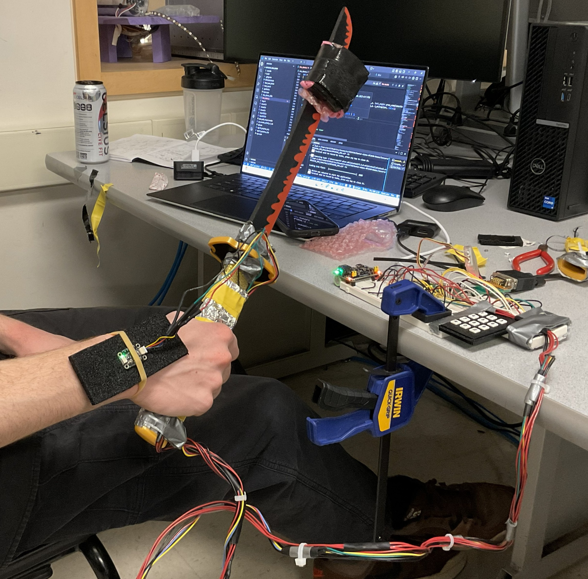
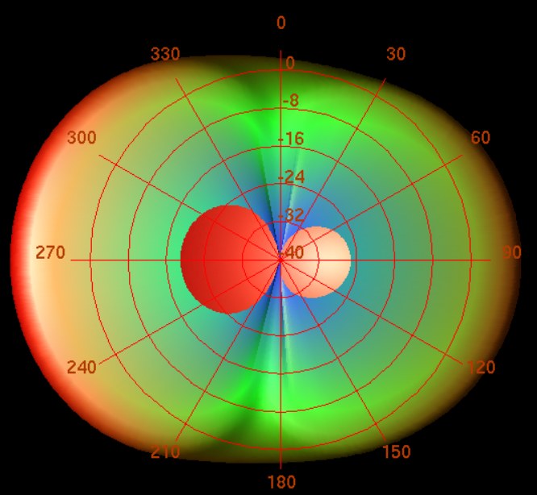
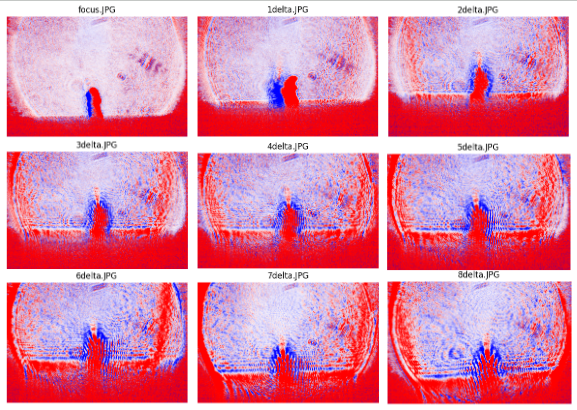

projects

Samurai Training Game
An embedded motion-tracking system using IMU sensing and real-time haptic feedback to teach proper sword technique.
C / C++
RP2040
Sensor Fusion
PID Control
Haptics

Leaky Wave Antenna
A balanced CRLH metamaterial leaky-wave antenna designed in Keysight ADS, featuring full-backfire to endfire beam steering from 2-4 GHz.
RF Design
Keysight ADS
Electromagnetics
Metamaterials

Wave Optics for Plasma Diagnostics
Investigating wave-optics modeling for high-energy-density plasma diagnostics using pulsed laser experiments and Chromatix simulations.
Python
Computational Physics
Laser Optics
Chromatix

Grietzer Memorial Park Redesign
A comprehensive municipal park redesign in Johnson City, NY, focusing on ADA accessibility, green infrastructure, and community needs.
Urban Planning
ADA Compliance
GIS
Green Infrastructure